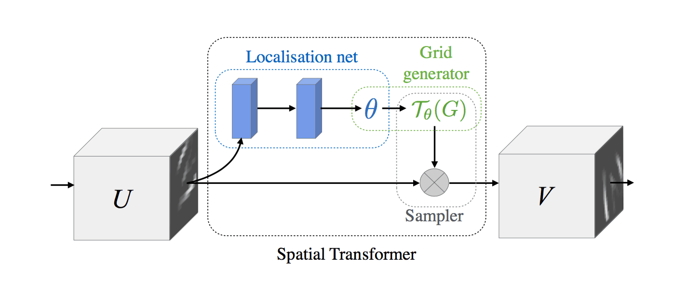
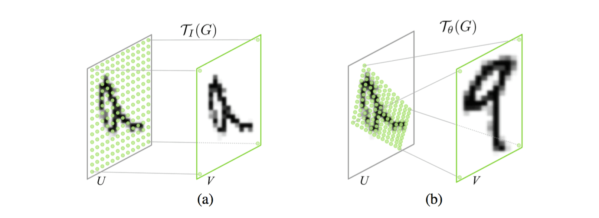
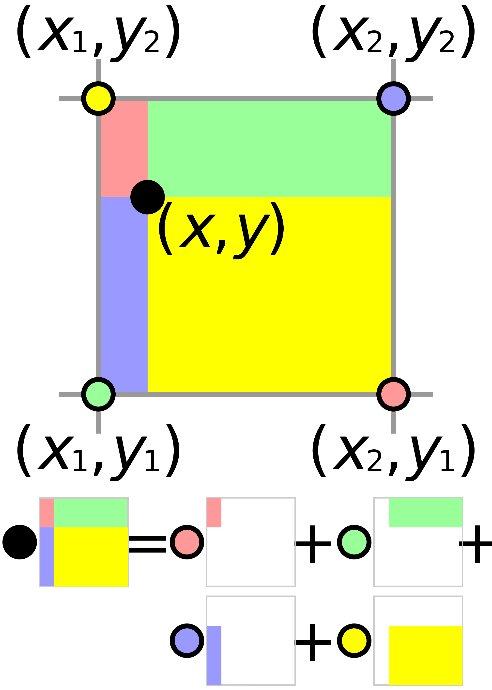
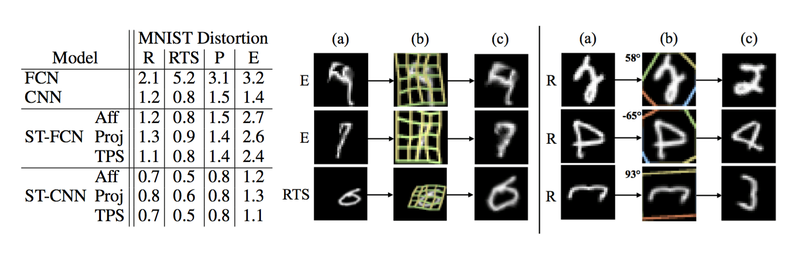
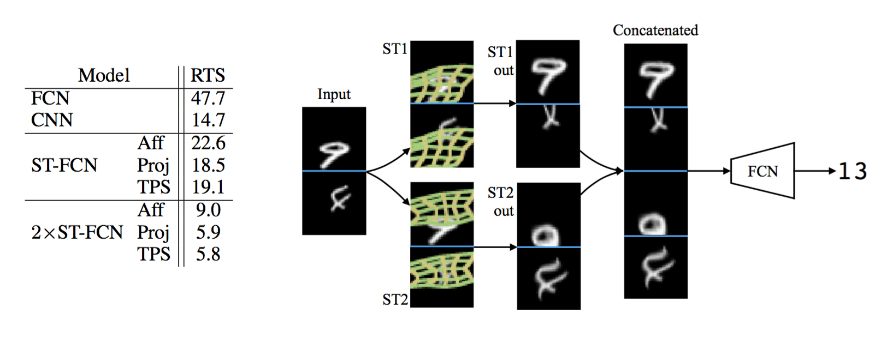
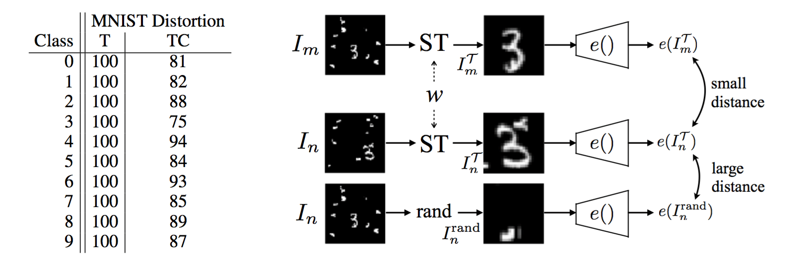

Spatial Transformer Networks
Max Jaderberg, Karen Simonyan, Andrew Zisserman, Koray Kavukcuoglu
Content
- Limitations of Convolutional Nets
- Spatial Transformer Networks
- Results
- Observations
Recognizing objects is difficult!
- Algorithms lack 3D cues
- Classes carry meaning
- Lighting effects
- Viewpoint changes
- Deformations
(Hinton, 2012)
How CNNs achieve translation invariance?
- CNNs present equivariance at the feature detector level...
- ...and limited translation invariance across multiple convolution and pooling layers
- But they're "doomed" because they don't preserve spatial relations
(Hinton, 2012)
Brute Force - Data Augmentation
- Ciresan, 2010 - MNIST training set is distorted at each epoch with affine transformations + elastic deformations emulating uncontrolled oscillations of hand muscles
- 0.35% error rate on MNIST
Brute Force - Data Augmentation
- Baidu Research, 2015 - Augmentation and training on a 36 nodes cluster with 144 GPUs
| Augmentation |
Possible changes |
| Color Casting |
68,920 |
| Vignetting |
1,960 |
| Lens Distorsion |
2,60 |
| Rotation |
20 |
| Flipping |
2 |
| Cropping |
82,944 |
- 5.98% error rate on ImageNet
Related work. General discussion
- Hinton, 2011 - Transforming auto-encoders
- Taken further by Tieleman, 2014
- These tehniques learn features from transformation supervision
Related work. Transforming Feature Maps
- Lenc & Vedald, 2015 - Understanding image representations by measuring their equivariance and equivalence
- Gens & Domingos, 2014 - Deep symmetry networks. The transformations in the affine group are applied to feature maps.
- There's an entire class of CNN variations modified to achieve spatial invariance by transforming the feature maps.
Spatial Transformer Networks
Architecture
Spatial Transformer Module

1. Localization Network
- Takes a $\mathrm{U} \in \mathbb{R}^{H x W x C}$ tensor...
- ...and learns $\theta$ parameters
- Can be either a FCN or a CNN...
- ...but it needs to include a final regression layer to produce the transformation parameters $\theta$
2. Parameterised Sampling Grid
- Warps the input by applying to each pixel a sampling kernel centered at a particular location
- Output pixels are defined to lie on a regular grid $G =\{G_i\}$ of pixels $G_i = (x_i^t,y_i^t)$
- Both source and target coordinates are normalized
2. PSG - Affine Transformation

$$\begin{pmatrix} x_i^s \\ y_i^s \end{pmatrix}= \mathcal{T}(G_i) =
\mathrm{A}_{\theta}\begin{pmatrix} x_i^t \\ y_i^t \\ 1 \end{pmatrix} =
\begin{bmatrix} \theta_{11} & \theta_{12} & \theta_{13} \\ \theta_{21}
& \theta_{22} & \theta_{23} \end{bmatrix} \begin{pmatrix} x_i^t \\
y_i^t \\ 1 \end{pmatrix}$$
2. PSG - Beyond Affine
- The class of transformations can be more constrained, as used for attention.
- Or more general: Eg. eight parameters can encode plane projective transformations and thin plate spline transformations.
- In fact it can have any parameterised form, provided that is differnetiable with respect to the parameters...
- ...so that we can backpropagate the gradients.
3. Differentiable Image Sampling
Because we move pixels around during a transformation, we need to sample them.
A sampler must take the set of sampling points $\mathcal{T}_{\theta}(G)$, along with input U and produce the sampled output V.
$$V_i^c = \displaystyle\sum_{n}^{H} \displaystyle\sum_{m}^{W}
U^{c}_{nm} k(x_i^s - m; \mathbf{\Phi}_x)k(y_i^s - n; \mathbf{\Phi}_y)
\quad \forall i \in [1 \ldots H'W'] \quad \forall c \in [1 \ldots C]$$
$\phi_x$ and $\phi_y$ are the parameters of a generic sample kernel $k()$ which defines the image interpolation
3. Example - Integer Sampling Kernel
Copy the value at the nearest pixel to $(x_i^s,y_i^s)$ to the output location $(x_i^s,y_i^s)$
$$V_i^c = \displaystyle\sum_{n}^{H} \displaystyle\sum_{m}^{W}
U^{c}_{nm} \delta(\lfloor x_i^s + 0.5 \rfloor -m)
\delta(\lfloor y_i^s + 0.5 \rfloor -n)$$
- $\lfloor x + 0.5\rfloor$ rounds $x$ to the nearest integer.
- $\delta()$ is the Kronecker delta function.
3. Real deal - Bilinear Sampling Kernel

$$V_i^c = \displaystyle\sum_{n}^{H} \displaystyle\sum_{m}^{W}
U^{c}_{nm} \max (0, 1 - \vert x_i^s - m \vert) \max (0, 1 - \vert y_i^s -n \vert)$$
- $\max (0, 1 - \vert x_i^s - m \vert)$ makes sure we only look at the four adjacent pixels.
Differentiability with respect to $U$
$$\frac{\partial V_i^c}{\partial U^c_{nm}} =
\displaystyle\sum_{n}^{H} \displaystyle\sum_{m}^{W}
\max (0, 1 - \vert x_i^s - m \vert) \max (0, 1 - \vert y_i^s -n \vert)$$
Differentiability with respect to $G$
$$\frac{\partial V_i^c}{\partial x_i^s} =
\displaystyle\sum_{n}^{H} \displaystyle\sum_{m}^{W}
U^{c}_{nm}\max (0, 1 - \vert y_i^s -n \vert)
\begin{cases} 0 & \text{if} \; \vert m - x_i^s \vert \ge 1 \\
1 & \text{if} \; m \ge x_i^s \\ -1 & \text{if} \; m < x_i^s \end{cases}$$
- Any sampling kernel works as long as subgradients can be defined with respect to $G$
- The affine transformation also needs to be differentiable so that we backpropagate the loss gradients back to the transformation parameters $\theta$
The combination of localisation network, grid generator, and sampler forms a spatial transformer.
Spatial Transformer Networks (I)
- Self-contained module that can be dropped into a CNN or FCN at any point...
- ...and in any number
- Computationally very cheap
- Knoweledge of how to transform each training sample is cached in the weights of the localisation net...
- ...and also in the weights of the layers previous to a ST
Spatial Tranformer Networks (II)
- We can also feed the output of the localisation net, $\theta$ params, to the rest of the network, as it encodes transformation
- Multiple STNs in parallel, if there are multiple objects or parts of interest in a feature map...
- ...this is also a limitation
Results
- MNIST
- Street View House Numbers
- Fine-Grained Classification
MNIST - Setting
- Baseline FCN with two hidden layers and a classification layer.
- Baseline CNN with
- 9 x 9 convolutional layer, 2 x 2 max-pooling layer
- 7 x 7 convolutional layer, 2 x 2 max-pooling layer
- classification layer
- 32 - 64 filters per layer
- All networks use softmax and ReLU
MNIST - Setting
- All STNs are placed at the front of the network
- STN localisation nets with:
- FCN of 32 units
- two 20-filter 5 x 5 convolutional layer
- 2 x 2 max-pooling
- FCN of 20 units
- All networks contain the same no of learnable params ~ 400k
MNIST - Distorted

Demonstrates resilience to distorsions
MNIST - Addition

Uses parallel STNs
Demonstrates the capacity to model multiple objects
MNIST Co-localisation
- Given a set of images that are assumed to contain instances of a common but unknown object class, localise (with a bounding box) the common object.
- Neither the object class labels, nor the object location ground truth is used for optimisation, only the set of images.
MNIST Co-localisation

- Encoding function $e()$ is a CNN trained with the distorted MNIST set
- Hinge loss to enforce the distance between two outputs of the ST to be less than the distance to a random crop